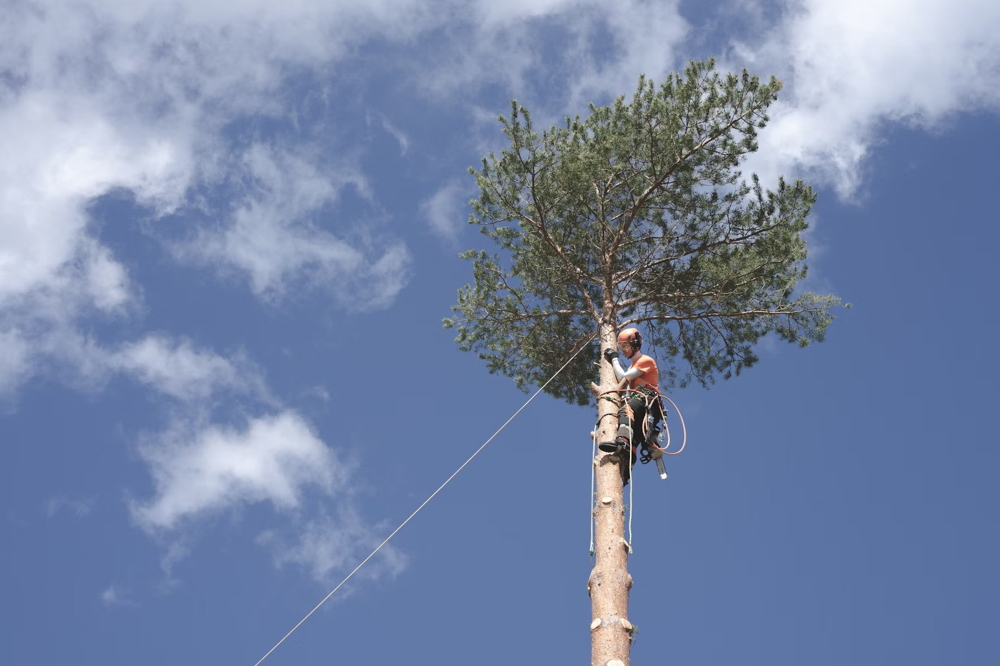

Climbing
Scale the highs of one of the local quarry slabs.
Max group size 8. Ages 8+
Abseiling

Take the scary step and abseil from the top of one of the local quarry slabs. There is a lovely view... if you are brave enough to look down!
Max group size 8. Ages 8+
Pole Climb

Ever wondered how telephone engineers get to the top of the telephone poles? Well, here’s your chance to find out.
Group size 8. Ages 8+